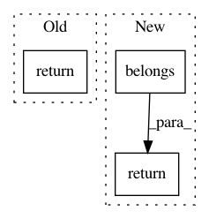

b3a35f86889a865bd9ebaf4548e9c80613855b67,geomstats/geometry/skew_symmetric_matrices.py,SkewSymmetricMatrices,belongs,#SkewSymmetricMatrices#Any#Any#,50
Before Change
belongs : array-like, shape=[...,]
Boolean evaluating if matrix is skew symmetric.
return Matrices(self.n, self.n).is_skew_symmetric(mat=mat, atol=atol)
@staticmethod
def projection(mat):
rCompute the skew-symmetric component of a matrix.
After Change
Boolean evaluating if matrix is skew symmetric.
is_skew = self.is_skew_symmetric(mat=mat, atol=atol)
return gs.logical_and(
is_skew, super(SkewSymmetricMatrices, self).belongs(mat))
@classmethod
def projection(cls, mat):
rCompute the skew-symmetric component of a matrix.
In pattern: SUPERPATTERN
Frequency: 3
Non-data size: 3
Instances
Project Name: geomstats/geomstats
Commit Name: b3a35f86889a865bd9ebaf4548e9c80613855b67
Time: 2020-12-21
Author: nicolas.guigui@inria.fr
File Name: geomstats/geometry/skew_symmetric_matrices.py
Class Name: SkewSymmetricMatrices
Method Name: belongs
Project Name: geomstats/geomstats
Commit Name: 7515e0a7f42fe67fb4262147f41c1014afacb33c
Time: 2018-12-30
Author: ninamio78@gmail.com
File Name: geomstats/spd_matrices_space.py
Class Name: SPDMatricesSpace
Method Name: belongs
Project Name: geomstats/geomstats
Commit Name: 48f114dfb7ae386b8baef4e261a554a1cdedc4b9
Time: 2020-01-22
Author: opeltre@gmail.com
File Name: geomstats/geometry/general_linear.py
Class Name: GeneralLinear
Method Name: belongs